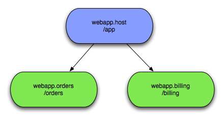
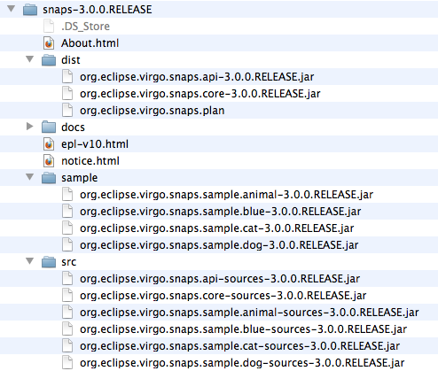
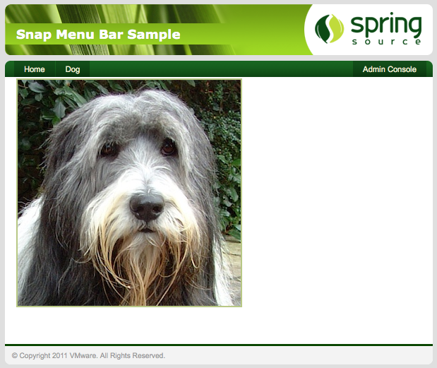
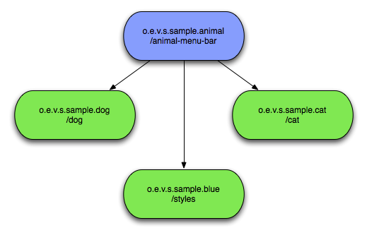
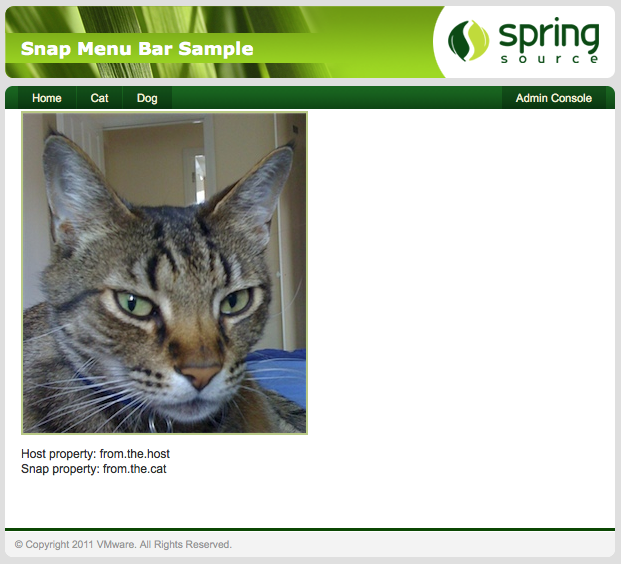
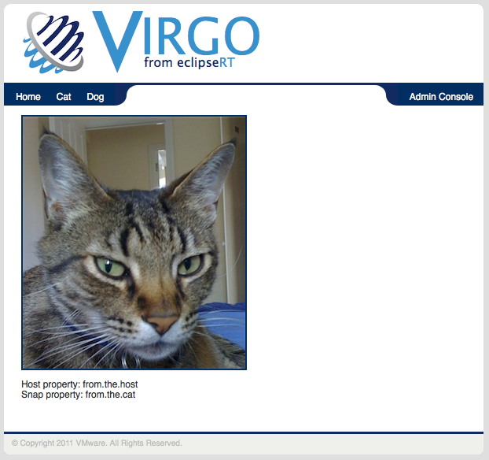

Table of Contents
This Guide covers Virgo Snaps and assumes you are already familiar with OSGi and Virgo. See here.
Using Virgo Snaps, or VS for short, you can construct a web application from multiple OSGi bundles, each of which serves up content for a distinct sub-portion of your application's URL space. VS applications are arranged in a parent/child structure, with each application having at most one top-level parent, and zero or more children/grand children and so on. Parents are referred to as the hosts, children as snaps.

Here you see that any HTTP requests for '/app' will be dealt with by the host bundle while '/app/orders'
and '/app/billing' will be dealt with by their respective snaps bundles. Each host/snap can use completely different web technologies
to deal with the requests, VS places no restrictions on your choices. The developer decides how to split
the application up and how closely to couple the host and various snaps. VS has been designed to be as
un-invasive as possible while still making it easy to share information between the host and its snaps.
VS requires Virgo Server for Apache Tomcat and Java SE 6 or later to be installed. Java is available from http://www.java.com/ and elsewhere. Virgo Server for Apache Tomcat is available from here.
VS is distributed as a Zip file. This can be downloaded from here.
Once the Zip file is unpacked you will find several things inside, including a copy of this documentation in the
docs folder. The layout is shown below.
|  |
Take the bundles and plan in the dist folder and place them in either the /repository/usr
or /repository/ext folder of your Virgo install. Later you need the bundles in the sample
folder. If you wish to view the source for VS or its sample, then these are in the src
folder.
In order to start the Snaps system as a part of your Virgo Server for Apache Tomcat, the Snaps plan needs to be referenced
from the initialArtifacts property. This is located in the config file at
${SERVER_HOME}/config/org.eclipse.virgo.kernel.userregion.properties. The property should be
extended like this.
initialArtifacts=repository:plan/org.eclipse.virgo.kernel.userregion.springdm,
repository:plan/org.eclipse.virgo.web.tomcat,
repository:plan/org.eclipse.virgo.snapsNow you are ready to check that Snaps is working.
The sample application in the Zip file demonstrates all of the features of Snaps. You will cover this application in detail later, but for now install it to verify that you have a working Snaps install. Start the server up and check the output it produces contains the following:
<DE0004I> Starting plan 'org.eclipse.virgo.snaps' version '3.0.0'. <DE0004I> Starting bundle 'org.eclipse.virgo.snaps.api' version '3.6.4.RELEASE'. <DE0005I> Started bundle 'org.eclipse.virgo.snaps.api' version '3.6.4.RELEASE'. <DE0004I> Starting bundle 'org.eclipse.virgo.snaps.core' version '3.6.4.RELEASE'. <DE0005I> Started bundle 'org.eclipse.virgo.snaps.core' version '3.6.4.RELEASE'. <DE0005I> Started plan 'org.eclipse.virgo.snaps' version '3.0.0'.
Open up the Virgo Admin Console by navigating to http://localhost:8080/admin and then go
to the artifacts tab to deploy some new bundles. The first bundle to deploy is located at
/sample/org.eclipse.virgo.snaps.sample.animal-3.6.4.RELEASE.jar, select it in the browser and
upload. In the terminal window you started the Virgo Server for Apache Tomcat in you should see the usual messages about the
bundle starting and this message:
<SN0000I> Host created for path '/animal-menu-bar'
This shows that the host has been registered and is ready for Snaps to attach to it. To view the application take
your browser to http://localhost:8080/animal-menu-bar/. You should be presented with a green looking
page that has a menu bar with two links on it. One will take you to the page you are currently on while the other goes
back to the admin page.
This is all very nice, but it's time to deploy another snap that will dynamicaly add some extra content to the app. The next bundle
to deploy is located at /sample/org.eclipse.virgo.snaps.sample.dog-3.6.4.RELEASE.jar. Deploy it the same way
as the last one using the admin console and check the messages to verify it has been bound to the host:
<SN0010I> Snap bound to path '/animal-menu-bar/dog'
In your browser, go back to the application and refresh the page and a new menu item should now be present. If you click it a new page will load with content from the newly installed snap. In this case a picture of a dog.

You have now verified that your install is working and can continue on to learn how Snaps works and how you can use it to break up your web applications.
Every snap or host should also be a regular WAB (Web Application Bundle), all you have to do is add some additional configuration to benefit from VS.
In the WAB that is to act as a host to Snaps bundles, all that needs to be added is a filter in the hosts '
web.xml'. This filter can be mapped to any sub path that you want forwarded to registered
snaps. It is important to note the extra dispatcher declarations in the filter-mapping.
Without these internal lookups, resources like JSPs won't get passed to the appropriate snap when needed.
<filter>
<filter-name>host-filter-name</filter-name>
<filter-class>org.eclipse.virgo.snaps.core.SnapHostFilter</filter-class>
</filter>
<filter-mapping>
<filter-name>host-filter-name</filter-name>
<url-pattern>/*</url-pattern>
<dispatcher>INCLUDE</dispatcher>
<dispatcher>FORWARD</dispatcher>
<dispatcher>REQUEST</dispatcher>
</filter-mapping>
A snap is a normal WAB with the addition of two extra manifest headers. The first Snap-Host is used
to resolve the WAB you want to act as a host for this snap. The second Snap-ContextPath gives the
path the snap will answer to. In order to reach the snap a request must be made for the host's context path, plus any
path in the host's Snaps filter followed by the path given with the Snap-ContextPath header.
Snap-Host: org.eclipse.virgo.snaps.sample.animal;version="${version:[=.=.=, =.+1)}"
Snap-ContextPath: /dog
There is a tag library available that makes information about the Snaps environment available to the host from within a
JSP page. The prefix and URI to declare are <%@ taglib prefix="snaps" uri="http://www.eclipse.org/virgo/snaps"
%>. You can now access an array of all the Snaps currently registered with the host. Each snap in the array
has two values, the first is the context path the Snap is registered with, as given in the snaps manifest header. The
second is an array of properties, if any, given in a property file in the snap. The file must be in the META-INF
directory and have a name of snap.properties. The following code snippet shows all of these
in use to produce links to each of the installed snaps.
<snaps:snaps var="snaps">
<c:forEach var="snap" items="${snaps}">
<a href="<c:url value="${snap.contextPath}${snap.properties['link.path']}"/>">
${snap.properties['link.text']}</a>
</c:forEach>
</snaps:snaps>
The first line uses the Snaps tag library to place the array of snaps into the snaps variable. Then a
forEach loop goes through each snap. The content of the forEach loop is the really interesting
bit. The first variable ${snap.contextPath} returns the context path of the snap. The two lookups are for
properties ${snap.properties['something']}. They rely on the snap having the properties file in place with
link.path and link.text defined in it. This shows the flexibility you have for defining
your own contract between the host and its snaps. In this case each snap can contribute extra information about how links in
a menu should be constructed.
If the snap needs to lookup any resources, this can be done in the normal way and if the resource cannot be found in the snap,
then the host will be checked. Remember that a host and all its snaps use a single ServletContext. As the
snap is always checked first it can hide resources at the same path in its host. So if you want to look up a resource in the
snaps host that exists in the snap simply prefix the path with host:. This will then cause the Snaps system to
bypass the snap and look only in its host for the requested resource. If it is not found in its host the snap will NOT be
checked, the lookup will return with nothing.
request.getServletContext().getResource("host:/WEB-INF/sample.properties");
This line of Java code gets the ServletContext from the HttpRequest object and then tries to get a resource from the host, bypassing the snap.
The Virgo Snaps Zip file comes with a sample application that you may have already deployed to verify your VS install. In this chapter you will look at it in more detail to see how an application can be composed and see all the Snaps features in action.
The application is very simple, it consists of just a front end, composed of four bundles, a host with three Snaps.

The host and three snaps show their Snap-ContextPaths. The Cat and Dog snaps both
contribute content while the final snap just contributes styling information in the form of css
files. The following sections look at each of these in detail.
This bundle is very simple with no Java code. It defines the Snaps filter in its web.xml
just as you have seen in the Using Snaps section. The
menu bar uses the taglibs support to render links for each registered Snap.
<ul>
<li><a href="<c:url value="/"/>">Home</a></li>
<snaps:snaps var="snaps">
<c:forEach var="snap" items="${snaps}">
<c:if test="${snap.contextPath ne '/styles'}">
<li><a href="<c:url value="${snap.contextPath}${snap.properties['link.path']}"/>">
${snap.properties['link.text']}</a>
</li>
</c:if>
</c:forEach>
</snaps:snaps>
</ul>
This is very similar to an example you have already seen. It puts the links in a list and adds a link at the
beginning to return to the host. The properties it is referencing are located in the snaps themselves at
/META-INF/snap.properties.
If you now deploy both the Dog and Cat snaps, two new items will appear on the menu bar, each providing content from their respective snaps.

If you look at the Cat page you will see it is also displaying some properties. The Cat Snap is a little more
complex, it has it's own DispatcherServlet defined in its web.xml and a
controller defined using annotations. If you look at the controller code you will see where these two properties
come from.
@Controller
public class CatController {
@RequestMapping("/meow")
public ModelAndView cat(HttpServletRequest request) throws IOException {
URL host = request.getServletContext().getResource("host:/WEB-INF/sample.properties");
Properties host_props = new Properties();
if(host != null){
host_props.load(host.openStream());
}
URL snap = request.getServletContext().getResource("/WEB-INF/sample.properties");
Properties snap_props = new Properties();
if(snap != null){
snap_props.load(snap.openStream());
}
return new ModelAndView("index").addObject("host", host_props.getProperty("some.property"))
.addObject("snap", snap_props.getProperty("some.property"));
}
}
There are two properties files called sample.properties located at the same path within both
the Cat snap and the host. Each contains a property called some.property but with distinct
value. Looking at the code above you can see the host: prefix being used to ensure the first lookup
only looks in the host and skips the snap. These values are then placed in the Model for the JSP page to render.
Finally the Blue styling snap shows how Snaps can be used in other ways. Deploying this will cause all requests
to /styles to be redirected and the application will change in appearance but not content. All
this happens without re-deploying the host bundle, although you may need to do a full refresh to clear your browser's
cache.

This is the same page as before, being rendered by the host and the Cat snap, but with the style information now coming from the Blue snap.The User and Programmer Guides provide a lot of information about using and developing applications for the Virgo Server.
Virgo Server for Apache Tomcat Programmer Guide
Virgo Server for Apache Tomcat User Guide
Slides from a presentation at EclipseCon 2011 about Virgo Snaps.